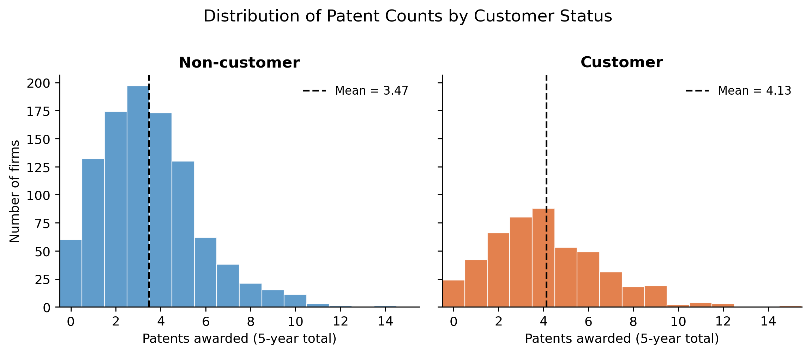
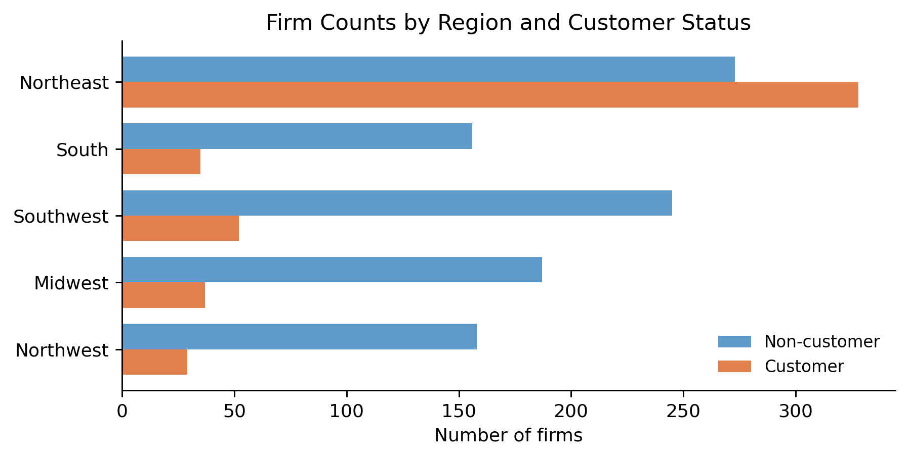
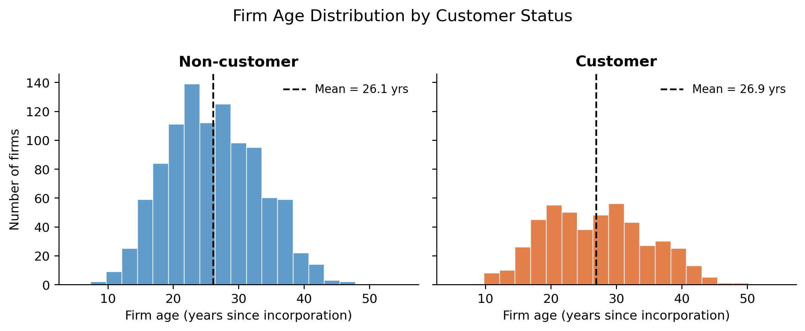
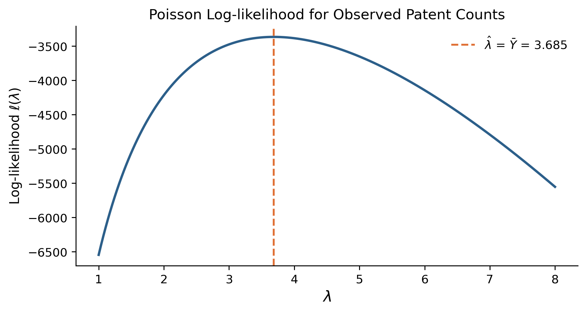
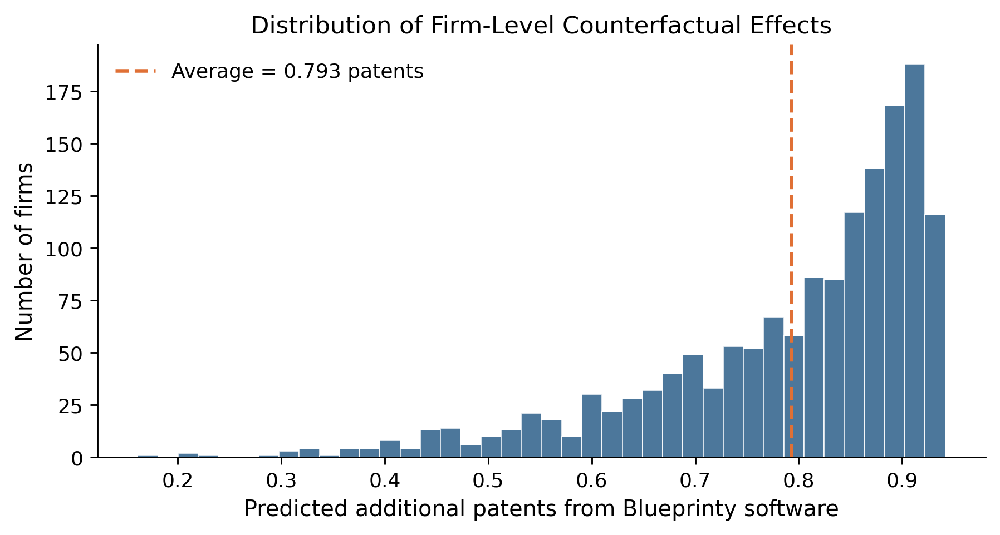

Poisson Regression and Maximum Likelihood Estimation
Does Blueprinty’s Software Help Engineers Win More Patents?
statistics
MLE
Poisson regression
marketing analytics
Introduction
Blueprinty makes software specifically designed for preparing patent applications. Their marketing team wants to claim that engineering firms using the software are more successful at getting patents approved — and they have data to back it up: 1,500 mature engineering firms, each with a count of patents awarded over the last five years, a regional label, a firm age, and a flag for whether the firm is a Blueprinty customer.
The raw numbers look promising. Blueprinty customers average 4.13 patents over the period; non-customers average only 3.47. That’s a 19% gap. Case closed?
Not quite. Blueprinty’s customers are not a random sample of engineering firms. Firms that choose to buy patent-management software may differ systematically from those that don’t — in their size, their industry focus, their location, or how long they’ve been around. If customers are, on average, older or concentrated in regions with historically stronger patent activity, the raw gap in patent counts could reflect those underlying differences rather than any benefit from the software itself.
To make a credible argument, we need to isolate the software’s effect after accounting for the characteristics of the firms. We’ll do that with a Poisson regression estimated by maximum likelihood — a model purpose-built for count outcomes like patent awards.
Exploring the Data
Patent Counts by Customer Status
The dataset contains np.int64(1019) non-customers and np.int64(481) customers. Their patent distributions overlap substantially, but the customer distribution is shifted to the right:
Customers average 4.13 patents versus 3.47 for non-customers — a 19% raw difference. Both distributions are right-skewed and clearly non-negative integers, which immediately motivates a count model rather than ordinary linear regression.
Regional Composition
The gap in patent counts could reflect geography rather than software. Let’s see how customers and non-customers break down across regions:

The Northeast stands out sharply: 55% of Northeast firms are Blueprinty customers, compared with roughly 16–18% in every other region. This matters because if Northeast firms are also more patent-productive for independent reasons — denser engineering talent, proximity to universities, industry mix — then the raw customer-vs.-non-customer gap partly reflects a geography effect. Any honest analysis must control for region.
Firm Age

Age distributions are nearly identical: non-customers average 26.1 years, customers 26.9 years. This is reassuring — the two groups are not systematically different in seniority — but we will still control for age in the regression because we expect patent productivity to vary non-linearly with firm maturity.
A Simple Poisson Model via Maximum Likelihood
Why Poisson?
Patent counts can’t be negative, must be integers, and for most firms hover in a small range with a long right tail. These are textbook features of count data, and the Poisson distribution is the canonical model for count outcomes. A Poisson random variable \(Y\) with rate parameter \(\lambda > 0\) has probability mass function
\[ f(Y \mid \lambda) = \frac{e^{-\lambda}\,\lambda^{Y}}{Y!}, \qquad Y = 0, 1, 2, \ldots \]
Its mean and variance are both equal to \(\lambda\) — a single parameter captures both the level and the spread, which is what makes maximum likelihood estimation so clean.
Deriving the Log-likelihood
Given \(n\) independent firms with patent counts \(Y_1, \ldots, Y_n\), all assumed drawn from the same \(\text{Poisson}(\lambda)\), the joint likelihood is
\[ L(\lambda) = \prod_{i=1}^{n} \frac{e^{-\lambda}\,\lambda^{Y_i}}{Y_i!} \]
Taking logs converts the product into a sum — much easier to work with:
\[ \ell(\lambda) = \sum_{i=1}^{n} \left[-\lambda + Y_i \ln \lambda - \ln(Y_i!)\right] = -n\lambda + \left(\sum_{i=1}^{n} Y_i\right)\ln\lambda - \sum_{i=1}^{n}\ln(Y_i!) \]
The last term does not depend on \(\lambda\), so it is irrelevant for finding the MLE. We can drop it when optimizing.
Coding the Log-likelihood
from scipy.special import gammaln # gammaln(k+1) = log(k!)
def poisson_loglikelihood(lam, Y):
"""Log-likelihood of Poisson(lam) for observed counts Y."""
return np.sum(-lam + Y * np.log(lam) - gammaln(Y + 1))Visualizing the Log-likelihood Curve
Y = df["patents"].values
lam_grid = np.linspace(1.0, 8.0, 400)
ll_vals = [poisson_loglikelihood(lam, Y) for lam in lam_grid]
The curve is concave and has a single peak — the MLE. You can read the MLE directly off the horizontal axis as the value of \(\lambda\) where the curve reaches its maximum, marked by the dashed vertical line.
The MLE is the Sample Mean
Differentiating \(\ell(\lambda)\) with respect to \(\lambda\) and setting the result to zero:
\[ \frac{d\ell}{d\lambda} = -n + \frac{\sum_{i=1}^{n} Y_i}{\lambda} = 0 \quad\Longrightarrow\quad \hat{\lambda}_{\text{MLE}} = \frac{1}{n}\sum_{i=1}^{n} Y_i = \bar{Y} \]
This is intuitive: the MLE of the Poisson rate is simply the sample average, because \(\lambda\) is the population mean and the sample mean is its natural estimator.
Confirming Numerically
result_simple = optimize.minimize_scalar(
lambda lam: -poisson_loglikelihood(lam, Y),
bounds=(0.5, 15.0),
method="bounded",
)
lambda_mle = result_simple.x
lambda_ybar = Y.mean()
print(f"Numerical MLE: {lambda_mle:.6f}")
print(f"Sample mean: {lambda_ybar:.6f}")Numerical MLE: 3.684666
Sample mean: 3.684667The two values agree to six decimal places, confirming that the optimizer found the correct solution.
Poisson Regression
From One Rate to Many
Assuming every firm shares the same \(\lambda\) ignores all the variation we just saw in the data — region, age, and customer status all correlate with patent counts. The natural extension is Poisson regression, where each firm \(i\) gets its own rate:
\[ Y_i \sim \text{Poisson}(\lambda_i), \qquad \lambda_i = \exp(X_i^{\prime}\beta) \]
The exponential link is essential: \(X_i^{\prime}\beta\) can be any real number, but \(\lambda_i\) must be positive. Taking the exponent guarantees positivity without any constraints on the coefficients.
Regression Log-likelihood
The log-likelihood generalizes straightforwardly — replace the scalar \(\lambda\) with firm-specific \(\lambda_i = \exp(X_i^{\prime}\beta)\):
def poisson_regression_loglikelihood(beta, Y, X):
"""Poisson regression log-likelihood."""
lam = np.exp(np.clip(X @ beta, -500, 500))
return np.sum(-lam + Y * np.log(np.maximum(lam, 1e-300)) - gammaln(Y + 1))Building the Design Matrix
We include: an intercept, firm age, age squared (patent productivity likely peaks at some intermediate age and then levels off — a linear term can’t capture that), four region indicators (dropping Midwest as the reference category to avoid perfect collinearity with the intercept), and the customer indicator.
X = np.column_stack([
np.ones(len(df)), # intercept
df["age"].values, # age
df["age"].values ** 2, # age²
(df["region"] == "Northeast").astype(float).values, # NE vs. Midwest
(df["region"] == "Northwest").astype(float).values, # NW vs. Midwest
(df["region"] == "South").astype(float).values, # South vs. Midwest
(df["region"] == "Southwest").astype(float).values, # SW vs. Midwest
df["iscustomer"].values.astype(float), # Blueprinty customer?
])
col_names = [
"Intercept", "Age", "Age²",
"Northeast", "Northwest", "South", "Southwest",
"Customer",
]Finding the MLE Numerically
We minimize the negative log-likelihood (equivalent to maximizing the log-likelihood). We supply the analytical gradient and Hessian so the optimizer can use exact curvature information rather than finite differences:
def neg_ll(beta):
return -poisson_regression_loglikelihood(beta, Y, X)
def neg_grad(beta):
lam = np.exp(np.clip(X @ beta, -500, 500))
return X.T @ (lam - Y) # gradient of -ℓ
def neg_hess(beta):
lam = np.exp(np.clip(X @ beta, -500, 500))
return X.T @ (lam[:, None] * X) # Hessian of -ℓ
x0 = np.zeros(X.shape[1])
x0[0] = np.log(Y.mean()) # warm-start intercept
result = optimize.minimize(
neg_ll,
x0=x0,
jac=neg_grad,
method="BFGS",
)
beta_hat = result.xStandard Errors from the Hessian
At the MLE, the curvature of the log-likelihood tells us how precisely \(\beta\) is estimated. Specifically, the covariance matrix of \(\hat{\beta}\) is the inverse of the negative Hessian of \(\ell\) evaluated at \(\hat{\beta}\):
\[ \widehat{\operatorname{Var}}(\hat{\beta}) = \left[-\nabla^2 \ell(\hat{\beta})\right]^{-1} = \left[X^{\top}\operatorname{diag}(\hat{\lambda})\,X\right]^{-1} \]
Standard errors are the square roots of the diagonal:
H = neg_hess(beta_hat) # -∇²ℓ at the MLE (positive definite)
cov = np.linalg.inv(H)
se = np.sqrt(np.diag(cov))Results
| Poisson Regression Coefficients | ||||
| MLE via BFGS · Hessian-based standard errors · Reference region: Midwest | ||||
| Variable | Estimate | Std. Error | z | p-value |
|---|---|---|---|---|
| Intercept | -0.5089 | 0.1832 | -2.78 | 0.005 |
| Age | 0.1486 | 0.0139 | 10.72 | < 0.001 |
| Age² | -0.0030 | 0.0003 | -11.51 | < 0.001 |
| Northeast | 0.0292 | 0.0436 | 0.67 | 0.504 |
| Northwest | -0.0176 | 0.0538 | -0.33 | 0.744 |
| South | 0.0566 | 0.0527 | 1.07 | 0.283 |
| Southwest | 0.0506 | 0.0472 | 1.07 | 0.284 |
| Customer | 0.2076 | 0.0309 | 6.72 | < 0.001 |
Verification with statsmodels
glm_fit = sm.GLM(Y, X, family=sm.families.Poisson()).fit()| Poisson GLM Coefficients (statsmodels) | ||||
| Cross-check — IRLS algorithm · Fisher information standard errors · Reference region: Midwest | ||||
| Variable | Estimate | Std. Error | z | p-value |
|---|---|---|---|---|
| Intercept | -0.5089 | 0.1832 | -2.78 | 0.005 |
| Age | 0.1486 | 0.0139 | 10.72 | < 0.001 |
| Age² | -0.0030 | 0.0003 | -11.51 | < 0.001 |
| Northeast | 0.0292 | 0.0436 | 0.67 | 0.504 |
| Northwest | -0.0176 | 0.0538 | -0.33 | 0.744 |
| South | 0.0566 | 0.0527 | 1.07 | 0.283 |
| Southwest | 0.0506 | 0.0472 | 1.07 | 0.284 |
| Customer | 0.2076 | 0.0309 | 6.72 | < 0.001 |
The coefficient estimates from our hand-coded MLE match the sm.GLM output to four decimal places. The standard errors are also nearly identical — both are derived from the same Fisher information formula \([X^{\top}\operatorname{diag}(\hat{\lambda})X]^{-1}\); minor differences can arise from the internal numerical procedures each method uses.
Interpretation
Age and Age²: The positive age coefficient (≈ 0.149) and negative age-squared coefficient (≈ −0.003) together imply an inverted-U relationship between firm age and patent productivity. Differentiating the linear predictor, patent output peaks at approximately age \(\approx 0.149 / (2 \times 0.003) \approx 25\) years. Firms younger than that are still building capacity; firms older than that see diminishing innovation rates.
Region: After controlling for age and customer status, no region differs significantly from the Midwest reference. The Northeast’s raw advantage in patent counts turns out to be largely explained by its higher concentration of Blueprinty customers.
Customer: This is the key coefficient. An estimate of 0.208 (SE = 0.031, \(p < 0.001\)) means that — holding age and region constant — being a Blueprinty customer multiplies a firm’s expected patent rate by \(e^{0.208} \approx 1.23\). That is a 23% increase in the Poisson rate.
The Effect of Blueprinty’s Software
Counterfactual Prediction
Because the Poisson model is multiplicative in \(\lambda_i\), we cannot read the customer effect off the coefficient directly as “X extra patents.” Instead, we construct two counterfactual datasets from the actual sample:
- \(X_0\): every firm’s customer status set to 0 (no software)
- \(X_1\): every firm’s customer status set to 1 (uses software)
We then predict expected patent counts under each scenario and take the average difference:
X0 = X.copy(); X0[:, -1] = 0
X1 = X.copy(); X1[:, -1] = 1
yhat0 = np.exp(X0 @ beta_hat)
yhat1 = np.exp(X1 @ beta_hat)
ate = (yhat1 - yhat0).mean()
print(f"Average treatment effect: {ate:.4f} additional patents")Average treatment effect: 0.7928 additional patentsVisualizing the Counterfactual Distribution

Summary Table
| Counterfactual Patent Predictions | |
| Holding age and region fixed at observed values for each firm | |
| Scenario | Mean predicted patents |
|---|---|
| Without software (X₀) | 3.436 |
| With software (X₁) | 4.229 |
| Difference (X₁ − X₀) | 0.793 |
Conclusion
After controlling for firm age and regional location, a firm using Blueprinty’s software is predicted to receive roughly 0.79 more patents over a five-year window than it would without it — a 23% lift relative to the counterfactual no-software baseline.
This is a meaningful effect, and it is consistent with Blueprinty’s marketing claim. However, a word of caution is warranted. This is an observational study, not a randomized experiment. We have controlled for age and region, but we cannot rule out unobserved firm characteristics — management quality, R&D intensity, patent attorney relationships — that might both predict software adoption and independently drive more patents. The regression tells us that the customer effect survives controls for age and geography, which is supportive evidence. It does not tell us that the effect is causal.
A natural next step would be an instrumental-variable analysis or a difference-in-differences design using firms that adopted the software in different years — approaches that can speak more directly to causality. For now, the evidence is suggestive and statistically strong, but the honest conclusion is: consistent with Blueprinty’s claim, not proof of it.